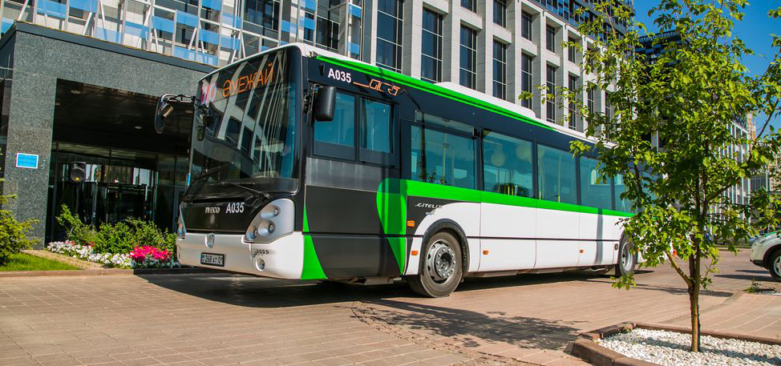

В апреле 2011 года Постановлением акимата г. Астаны была создана компания «Астана LRT» при Управлении пассажирского транспорта и автомобильных дорог г. Астаны.
На сегодняшний день «Астана LRT» выстраивает транспортную стратегию города и задает новые стандарты, реализуя существующие и потенциальные проекты как:
- Интеллектуальная транспортная система (ITS)
- Система диспетчеризации общественного транспорта
- Система информирования участников дорожного движения
- City Bus 1, 2, 3
- Модернизация маршрутной сети общественного транспорта
- Электронная система оплаты проезда
- Платные парковки
- School bus (школьные перевозки)
- Электронная транспортная модель Астаны
Кроме того, в ТОО «Астана LRT» проводятся транспортные исследования, анализ улично-дорожной сети города, пассажиропотока, повышение квалификации специалистов транспорта г. Астана, корреспонденции поездок с привлечением международных консультантов ведущих мировых компаний, как «Systra», «Typsa», «Swarco», «EBRD», «Bureau Veritas», «PwC» и др..
Если Вы профессионал своего дела и хотите стать частью нашего дружного коллектива, строить карьеру и Вы готовы к постоянному развитию – добро пожаловать в нашу компанию! Высылайте свое резюме по формату ТОО «Астана LRT», мы обязательно внесем Ваши данные в наш кадровый резерв!
Менеджер Департамента транспортного контроля (на время выполнения определенной работы)
Менеджер Департамента транспортного контроля (на время выполнения определенной работы) НАИМЕНОВАНИЕ СТРУКТУРНОГО ПОДРАЗДЕЛЕНИЯ Департамент транспортного контроля ТРЕБОВАНИЯ К КАНДИДАТУ Образование Высшее юридическое, экономическое и/или техническое образование, допускается высшее педагогическое образование с опытом работы не менее 1 года и среднее специальное образование при наличии опыта работы не менее 1 года. Опыт работы По специальности не менее полугода. Наличие обязательных знаний и навыков Знание Конституции Республики Казахстан, Кодекса Республики Казахстан об административных правонарушениях, закона Республики Казахстан от 21 сентября 1994 года «О транспорте в Республике Казахстан», закона Республики Казахстан от 4 июля 2003 года «Об автомобильном транспорте», закона Республики Казахстан от 17 апреля 2014 года «О дорожном движении», Закона Республики Казахстан от 21 июля 2007 года «О статусе столицы Республики Казахстан», «Об утверждении Правил перевозок пассажиров и багажа автомобильным транспортом» утвержденного Приказом и.о. Министра по инвестициям и развитию Республики Казахстан от 26 марта 2015 года, «Об утверждении Правил перевозки пассажиров и багажа автомобильным транспортом в столице» утвержденного постановлением Правительства Республики Казахстан от 8 ноября 2007 года, «Об утверждении Правил пользования коммунальными платными автопарковками (паркингами) на территории города Астаны» утвержденного постановлением акимата города Астаны от 21 октября 2015 года, «Об утверждении Правил организации автостоянок (автопарковок) на территории города Астаны» утвержденного постановлением акимата города Астаны от 3 мая 2016 года и иные законодательные и нормативные правовые акты Республики Казахстан, регулирующие сферу транспорта.
Наличие желательных знаний и навыков
- наличие опыта ведения переговоров;
- знание казахского, русского языков.
Личностные качества
- честность,
- профессионализм,
- ответственность,
- дисциплинированность,
- исполнительность,
- способность работать самостоятельно и в команде.
Дополнительные требования Наличие навыков работы с компьютерной техникой и прикладным программным обеспечением.
Функциональные обязанности
- осуществлять мониторинг качества услуг, предоставляемых перевозчиками города Астаны;
- осуществлять мониторинг по выявлению нарушений в деятельности водителей и кондукторов при осуществлении регулярных перевозок на маршрутных транспортных средствах;
- осуществлять мониторинг дорожно-транспортных происшествий с участием маршрутных транспортных средств;
- в электронной форме вести реестр нарушителей;
- в электронной форме вести реестр водителей, совершивших дорожно-транспортные происшествия с участием маршрутных транспортных средств;
- составлять анализ и/или справку для проведения оценки качества услуг, предоставляемых перевозчиками города Астаны и ответственных за выпуск маршрутных транспортных средств на маршруты;
- рассматривать обращения граждан, поступивших на интернет – ресурс акимата города Астана, контакт- центры акимата города Астана и контакт-центр Департамента по связям с общественностью Товарищества, а также проведение мероприятий по выяснению фактов, указанным в жалобах;
- обеспечить своевременное исполнение решений, приказов, распоряжений руководства Департамента;
- выполнять функции, возложенные на менеджеров в соответствии с положением Департамента, а также инструкциями, регламентами взаимодействия, заключаемыми договорами и памяткой культуры поведения менеджера согласно приложению, к настоящей инструкции;
- исполнять добросовестно должностные обязанности;
- вносить в установленном порядке директору Департамента предложения по вопросам деятельности Департамента;
- взаимодействовать с автомобильными перевозчиками в целях реализации возложенных на Департамент функций;
- взаимодействовать с государственными органами Республики Казахстан и иными организациями, в целях реализации возложенных на Департамент функций;
- осуществлять ежедневное обобщение сведений о выявленных нарушениях;
- предоставлять ежедневное обобщение сведений о выявленных нарушениях главным менеджерам Департамента;
- осуществлять ежедневное обновление информации в реестре нарушителей;
- ежедневно предоставлять отчет директору Департамента;
- осуществлять мониторинг на маршрутных транспортных средствах на наличие оплаты пассажирами стоимости проезда и провоза багажа, а также водителей и кондукторов на исключение безбилетного провоза;
- соблюдать исполнительскую и трудовую дисциплину, а также правила служебной этики сотрудника Департамента транспортного контроля;
- принимать все необходимые меры по обеспечению сохранности конфиденциальной информации, связанной с трудовой деятельностью;
- определять и выявлять факты нарушений Правил перевозок пассажиров и багажа автомобильным транспортом с использованием имеющегося в его распоряжении устройств видео-, фото фиксации, с целью подтверждения нарушений со стороны автомобильного перевозчика и его персонала;
- связываться с менеджерами Департамента по управлению дорожным движением, для осуществления вызова сотрудников Управления административной полиции Департамента внутренних дел города Астана;
- обеспечивать сохранность вверенного ему имущества Департамента;
- подготавливать справочную документацию;
- исполнять иные документы, акты или поручения директора Департамента;
- соблюдать правила охраны труда, техники безопасности и пожарной безопасности;
- соблюдать нормы деловой этики Товарищества;
- соблюдать правила ношения форменной одежды;
- не разглашать конфиденциальной информации Товарищества;
- соблюдать правила внутреннего трудового распорядка;
- осуществлять иные функции, возложенные законодательством Республики Казахстан, поручениями Председателя Правления Товарищества, а также положением об Департаменте.
Режим работы: Сменный график работы, 5/2, 8-ми часовой рабочий день
Астана, пр. Туран, 34
Телефон: 577 177
Факс: 571 777
Часы работы: пн.- пт.: 8.30 – 18.00
Телефон контакт-центра: 574 - 777
Канцелярия: office@astanalrt.com
Единый Контакт-центр по работе общественного транспорта
В Контакт-центре вы можете получить консультацию по работе общественного транспорта, а так же оставить обращение.
Номер телефона Контакт-центра: 574-777
Telegram-чат "Контакт-центр Астана LRT": https://t.me/callcenterastanalrt
Режим работы: ПН-ВС: 7.00 - 21.00 ч.
Директор департамента: Азанбаева Науат Канатовна
Контакты для представителей СМИ:
Астана, пр. Туран, 34
a.jarkimbekova@astanalrt.com
(электронный адрес предназначен только для представителей СМИ, обращения от пассажиров принимает только Контакт-центр)
Главный менеджер департамента: Алия
Телефон для представителей СМИ 8 7172 577 177 (вн. 180)
Часы работы: пн.- пт.: 8.30 – 18.00
Указанные выше контакты предназначены только для представителей средств массовой информации.
Если вы не являетесь представителем СМИ и желаете получить консультацию или оставить предложение или жалобу по вопросам общественного транспорта, пожалуйста, обращайтесь в наш Контакт-центр по номеру тел. 574 - 777
Убедительная просьба с обращениями звонить в Контакт-центр по номеру 574-777 или писать в Telegram-чат "Контакт-центр Астана LRT". Обращения, оставленные иным способом или направленные специалистам, не работающим в Контакт-центре, не рассматриваются.
Астана, пр. Туран, 34
8(7172) 577 177 (вн.205)
8(7172) 577 177 (вн. 227)
e-mail: I.Magambetov@astanalrt.com
e-mail: b.issayev@astanalrt.com
Указанные выше контакты предназначены только для рекламодателей.
Если вы желаете получить консультацию или оставить предложение или жалобу по вопросам общественного транспорта, пожалуйста, обращайтесь в наш Контакт-центр по номеру тел. 574 - 777.
Убедительная просьба с обращениями звонить в Контакт-центр по номеру 574-777 или писать в Telegram-чат "Контакт-центр Астана LRT". Обращения, оставленные иным способом или направленные специалистам, не работающим в Контакт-центре, не рассматриваются.
Прием граждан Председателем Правления осуществляется каждую первую и третью пятницу месяца
Предварительная запись осуществляется по телефону 270-105